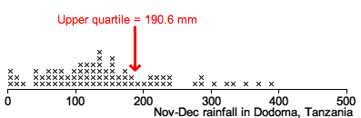

Standard errors and CIs from formulae
Simple formulae can be found for the standard errors of sample means and proportions. Formulae exist for the standard errors of most commonly used parameter estimates, though some require computer software to evaluate.
For any such estimator, an approximate 95% confidence interval can be found from
estimate - 2 s.e. to estimate + 2 s.e.
(The confidence interval can sometimes be improved by replacing the constant 2 with a slightly different value.)
If no formula for the SE is available...
For some estimators, there is no formula for the standard error, or no available software can evaluate it. In this situation, a different approach is needed.
In this section, we describe how simulations can be used to assess the accuracy of such estimators.
October rainfall in Dodoma, Tanzania
In most of Africa, the most important climatic variable is rainfall. A better understanding of the distribution of rainfall can affect the crops that are grown and when they are planted. In Dodoma, the rainy season usually starts in November or December, so rainfall then is particularly critical.
What is the November-December rainfall that is reached in 1 out of 4 years in Dodoma, Tanzania?
In other words, we want to estimate the upper quartile of the November-December rainfall distribution in Dodoma.
The diagram below shows the total rainfall in these months for the 78 years between 1935 and 2012.

The distribution is slightly skew — a few of the years had very high rainfall in these two months. The upper quartile of the rainfall distribution was 190.6 mm.
If the rainfall distribution remains the same as in the past, we would estimate rainfall of 190.6 mm or more in one out of every four November/Decembers.
There are no convenient formulae for the standard error of this type of estimator, so a simulation is needed to find its standard error.